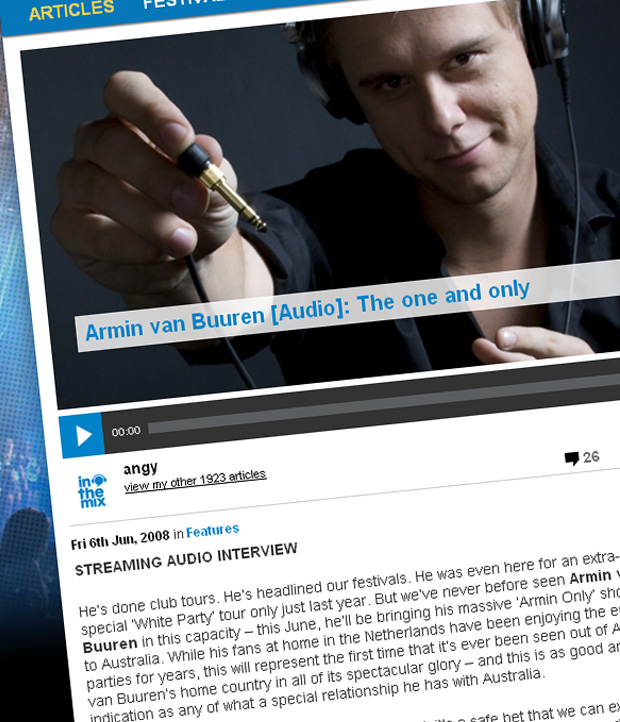

Armin van Buuren [Audio]: The one and only


ORIGINAL ARTICLE CONTAINS STREAMING AUDIO INTERVIEW He’s done club tours. He’s headlined our festivals. He was even here for an extra-special ‘White Party’ tour only just last year. But we’ve never before seen Armin van Buuren
in this capacity – this June, he’ll be bringing his massive ‘Armin Only’ show over to Australia. While his fans at home in the Netherlands have been enjoying the epic parties for years, this will represent the first time that it’s ever been seen out of Armin’s van Buuren’s home country in all of its spectacular glory – and this is as good an indication as any of what a special relationship he has with Australia.
Looking to the Holland installments of ‘Armin Only’, it’s a safe bet that we can expect dancers, special guests performers and vocalists, mind-blowing production and spectacular lasers… But ultimately, we don’t know what to expect as Armin and Future Entertainment are making sure that we’ve got some big surprises to look forward to.
As our excitement builds for June, ITM’s Angus Paterson talks to the man himself about the ‘Armin Only’ parties, the epic event that went down in the city of Utrecht only just last month, as well as the sort of variation that we’ll be hearing from his extended sets when he makes his way over to Australia next month.
Armin van Buuren will be playing at the following shows across the country this June…
Friday 6th June – ‘Armin Only’: Hordern Pavillion, Sydney
Saturday 7th June – ‘Armin Only’: Melbourne Park, Melbourne
Sunday 8th June – ‘Armin Only’: Melbourne Park, Melbourne
Friday 13th June – Metro City, Perth
Saturday 14th June – Commerce Building, Brisbane